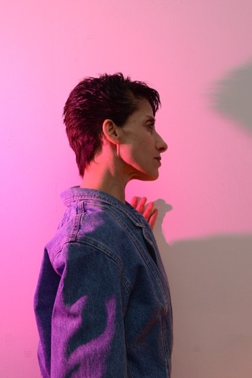

Biographie
Claudia TRIOZZI commence ses études de danse classique et contemporaine en Italie et s’installe à Paris en 1985. Parallèlement à son travail d’interprète (avec Odile DUBOC, Georges APPAIX, François VERRET, Alain BUFFARD, Xavier LEROY et Xavier BOUSSIRON), elle crée ses propres pièces dans lesquelles elle développe aussi bien la direction de la mise en scène que l’interprétation. Son travail de recherche et de réflexion se fonde sur une transmission où l’expérience du faire, du partage et l’engagement à l’autre fait preuve de pensée ouvrant des espaces de subjectivité et de remise en œuvre du temps.
Elle produit des spectacles iconoclastes, des tableaux vivants, dont la danse ne sort jamais indemne (entre autres Park, 1998 ; Dolled Up, 2000 ; The Family Tree, 2002 ; Stand, 2004 ; Opera’s Shadows, 2005 ; Up To Date, 2007 ; La prime 2008, 2008 ; Ni vu ni connu, 2010 ; Accent, 2017), car il s’agit toujours pour Claudia TRIOZZI de mettre à l’épreuve les présupposés du spectacle chorégraphique.
L’espace de représentation, les modes d’interprétation propres au danseur et les notions mêmes de spectacle font
l’objet d’une perpétuelle remise en question. De pièce en pièce, d’espaces d’exposition en scène de théâtre,
Claudia TRIOZZI repousse les limites du corps et les espaces de visibilité du danseur.
Depuis la pièce The Family Tree (2002), Claudia TRIOZZI, accompagnée sur scène par Xavier BOUSSIRON, explore le
travail de la voix en passant par des expériences qui l’engageront à l’écriture de textes et de chansons.
Elle expérimente des sonorités au vocabulaire bruitiste et lyrique où la voix s’exprime par des paragraphes de
temps puisés dans le cinéma, le théâtre et la radiophonie. En mars 2011, invitée par le Musée de la Danse à
Rennes, elle entame un nouveau projet intitulé Pour une thèse vivante, dans lequel elle livre sa réflexion sur
l’écriture d’artiste. Comment penser la recherche en art dans une action qui voudrait privilégier la pratique ?
« En tissant des liens avec des savoirs faire de tous horizons, il a été souvent question pour moi de chercher
la raison de mon obstination, la scène. Créer des changements permanents pour radicaliser une posture, cela peut
paraître contradictoire, comme par exemple se montrer capable de faire une chose qu’on affirme ne pas savoir. Je
voudrais parler d’un corps traversé, composé par une multiplicité d’énergies qui se joue du choix. Un art de
l’assemblage. »
(Claudia TRIOZZI)
Son travail se développe aussi bien sur scène qu’au travers de vidéos ou installations, exposées dans les musées
ou des galeries. Elle présente ses spectacles sur la scène européenne ainsi qu’aux États-Unis, en Corée, au
Japon où elle a bénéficié de la bourse AFAA, Villa Kujoyama, hors les murs, 2004.
Elle développe une pédagogie liée à son propre travail en intervenant dans différentes écoles d’art en France et
à l’étranger. En 2011, elle reçoit la bourse d’aide à la recherche et au patrimoine en danse mise en place par
le CND (Pantin) et une bourse de recherche à l’Akademie Schloss Solitude à Stuttgart. Claudia TRIOZZI est
artiste associée au Centre national de danse contemporaine d’Angers de 2011 à 2013 puis au CDN Théâtre de
Gennevilliers de 2013 à 2015 et à la Ménagerie de Verre en 2014. Claudia TRIOZZI est accueillie au CDN sur la
saison 2016/2017 en Laboratoire. En 2019, elle réalise une résidence aux Laboratoires d’Aubervilliers et
présente lors du Festival d’Automne Pour une Thèse Vivante, Claudia regarde la Danse, un CCN en terre et en
paille.
Productions
Pour une Thèse Vivante (vers son geste) Festival d’Automne Paris et Les Laboratoires d’Aubervilliers (2019),
Habiter pour créer La Gare Saint Sauveur à Lille pour les 40 ans du Centre Pompidou, Claudia regarde la Danse
(2018), Un CCN en terre et en paille (Pour une Thèse Vivante n° 5 – 2017), Accent 2017, Festival d’Avignon,
Comparses Musée du Louvre FIAC (Pour une Thèse Vivante n°4 – 2015), Boomerang ou le retour à soi (2013), Avanti
Tutta (Pour une Thèse Vivante n°3 – 2014), Tordre (2012), Pour une Thèse Vivante (2011), Idéal (2011), Ni vu ni
connu (2010), La Prime (2008), Up to date (2007), Fais une halte chez Antonella (2006), Strip-tease (2006), La
Baronne et son tourment (2006), Opera’s Shadows (2005), Stand (2004), The Family Tree (2002), Dolled Up (2000),
Bal Tango (1999), Park (1998), Gallina Dark (1996), Les Citrons (1992), La Vague (1991).